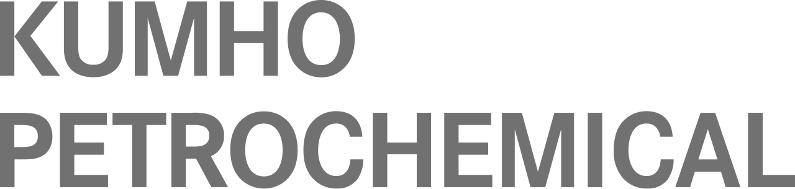

홈 > 브랜드 매거진 > NH농협금융지주
NH농협금융지주
NH농협금융지주는 농협중앙회가 100% 소유한 한국의 대형 금융지주회사로, 2012년 설립됐다.
산업 분야 브랜드·비즈니스 · 공개 등급 자료 기반 · 브랜드 평가 4.3 ★
한눈에 보는 브랜드
NH농협금융지주(NH Nonghyup Financial Group)는 농협(협동조합) 계열의 금융지주회사다. 2012년 3월 설립됐으며, 농협중앙회가 지분을 100% 보유한다.
브랜드 아이덴티티
NH농협은행·NH투자증권·NH농협생명·NH농협손해보험 등을 거느린 국내 최대급 금융그룹으로, 협동조합에 기반한 금융 네트워크가 특징이다.
제품과 서비스
대표 제품과 서비스 정보는 편집 검수 후 공개됩니다.
타임라인
정리된 연도형 이벤트가 없습니다.
BI/CI 변천사
확인된 BI/CI 이미지가 아직 없습니다.
함께 읽을 브랜드
NH투자증권(NH Investment & Securities)은 NH농협금융지주 산하의 대한민국 증권회사다.
 브랜드·비즈니스 · 자료 기반신한금융그룹
브랜드·비즈니스 · 자료 기반신한금융그룹신한금융그룹(Shinhan Financial Group)은 2001년 설립된 한국 최초의 민간 금융지주회사다.
 브랜드·비즈니스 · 자료 기반우리금융그룹
브랜드·비즈니스 · 자료 기반우리금융그룹우리금융그룹(Woori Financial Group)은 우리은행을 중심으로 한 한국의 대형 금융지주회사다.
 브랜드·비즈니스 · 자료 기반하나금융그룹
브랜드·비즈니스 · 자료 기반하나금융그룹하나금융그룹(Hana Financial Group)은 2005년 출범한 한국 3대 금융지주회사 중 하나다.
삼성화재(Samsung Fire & Marine Insurance)는 삼성그룹 계열의 한국 최대 손해보험사다.

브랜드·비즈니스 · 자료 기반금호석유화학금호석유화학(Kumho Petrochemical)은 합성고무·합성수지·정밀화학을 주력으로 하는 한국의 석유화학 기업이다.
 브랜드·비즈니스 · 자료 기반대우건설
브랜드·비즈니스 · 자료 기반대우건설대우건설(Daewoo E&C)은 1973년에 기원을 둔 한국의 종합건설사로, 2021년 중흥그룹에 인수됐으며 푸르지오 아파트 브랜드를 보유한다.
 브랜드·비즈니스 · 편집 검수페덱스
브랜드·비즈니스 · 편집 검수페덱스페덱스(FedEx)는 미국 멤피스에 본사를 둔 글로벌 특송·물류 기업이다.